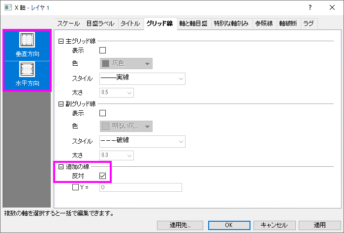
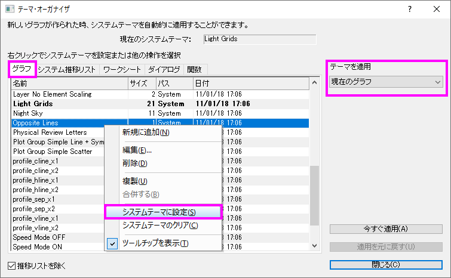

FAQ-946 2Dグラフの枠を表示するにはどうすればよいでしょうか。
Show-graph-Frame
最終更新日: 2019/04/19
デフォルト設定では、テンプレートから作成される、ほとんどの2DグラフはX軸と左のY軸のみを表示しています。レイヤ枠の上と下の線を表示する方法はいくつかあります。

現在のグラフの反対側の線をオンにするには
- X / Y軸をダブルクリックして軸ダイアログを開き、グリッドタブに行きます。Ctrlキーを押しながら、左側のパネルで垂直および水平アイコンの両方を選択します。右側のパネルで、追加行ブランチの下にある反対のチェックボックスをオンにします。適用ボタンをクリックします。
- 
デフォルト設定として常にグラフの反対側の線をオンにする
- グラフをアクティブにした状態で、メニューから環境設定：テーマオーガナイザーを選択して、テーマオーガナイザーを開きます。このダイアログにあるグラフタブに移動し、Opposite Linesテーマを探し、今すぐ適用ボタンをクリックしてこのテーマを現在のグラフに適用します。
さらに、テーマを適用のドロップダウンリストを使用して、現在のプロジェクト内の複数のグラフにこのテーマを適用することができます。
将来作成するすべてのグラフですべての軸をオンにしたい場合は、テーマ項目を右クリックしてコンテキストメニューからシステムテーマに設定を選択します。

枠を表示
- グラフをアクティブにして、表示: 表示様式: レイヤ枠を選択します。
 | Origin 2019bから、X、Y軸の線のスタイルと色に従ったレイヤ枠を表示します。
|
キーワード:レイヤ枠, 境界線, 上X軸, 右Y軸, 4つの側面, 四角形